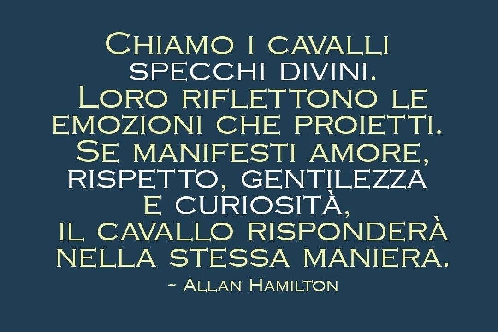
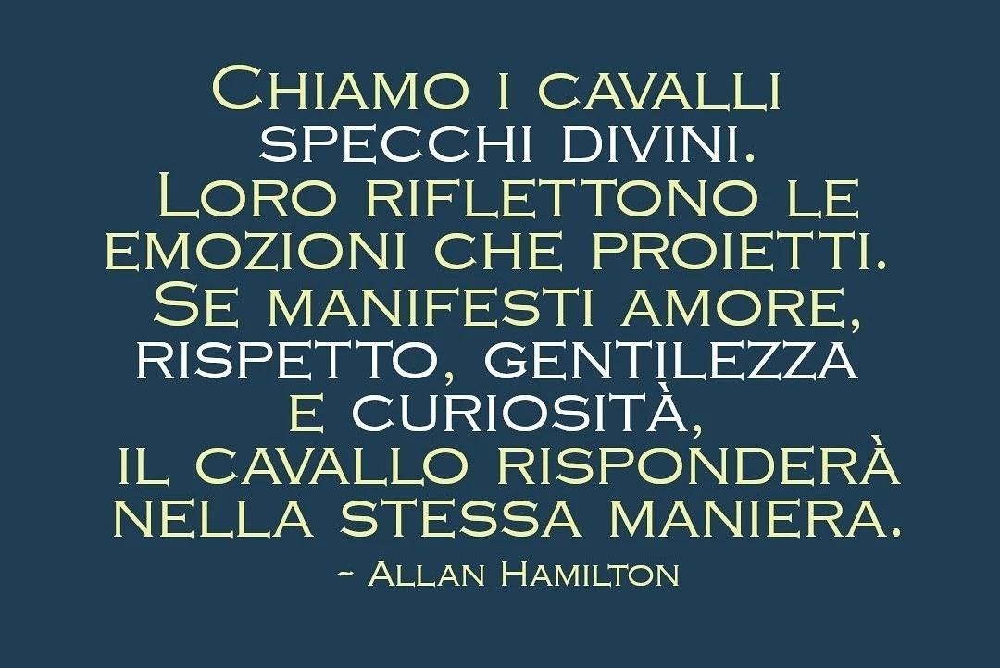

Simona Anderlini
Istruttrice e Tecnico Federale di Equitazione
Simona, con una vasta esperienza nell'insegnamento e nella formazione, è un pilastro fondamentale del nostro team. Laureata in Scienze della Formazione, vanta un'esperienza ventennale nel campo dell'equitazione, con specializzazioni in equiturismo, endurance e salto a ostacoli
Scopri di più